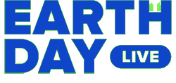

From April 22-24 to celebrate the 50th anniversary of Earth Day,
activists, performers, thought leaders, and artists will come together
for this three day livestream mobilization. This one will only be
hanging around on the Digital Directory for the duration of the stream,
so mark your calendars..
Bunker’s isoStream is a free 32 hour non-stop choose your
own adventure party from Friday 24 April - Sunday 26 April, showcasing
16 of Melbourne and Sydney’s favourite house & techno artists with
the help of some 3D artists.
Resident Advisor’s second edition of Club Quarantaene is
an option to ESC your bedroom and ENTER the club..
Bird Watching HQ is run by Scott from Ohio who likes birds.
Scott isn’t too picky when it comes to birds, he just enjoys watching
them. Scott made this website to inspire people to attract wildlife to
their backyards. Enter Scott’s website by clicking here.
You.DJ is the ultimate online DJ mixer with a traditional DJ
setup: 2 turntables and a mixer. Erik the programmer started the site in
2007 with the dream of building the most fun and easy DJ software ever.
Challenge: mix in some Earth sounds.
EarthWindMap is a live animated interactive map of global
weather conditions.
WorldCams.TV shares an interactive map with a huge variety of
live HQ camera streams from all over planet Earth, from city to sea. Be
a home nomad by harvesting the advantages of increased global awareness
and feelings that traditional nomads receive from changing locations,
without the need to move. For a home nomad, every day at home feels like
an awakened adventure.
Radio Garden is the global radio station the world needs,
presenting the promise of a connected Earth community free of borders
and city names, of informed global citizens and cultural exchange. The
site works by crawling the web for radio streams coming from every
possible location on Earth, and overlaying this station data with
corresponding geographic locations, and voila. Radio Garden is the
internet’s crazy beautiful dream hidden beneath all the noise..
Bird Migration is an interactive visualisation about migratory
birds. While humans are in coronavirus lockdown, over 4,000 species of
birds who are regular global migrants sure aren’t. Explore where they’re
off to.
Humans have forgotten how to listen to the living world,
Tone Generator is a simple tool that explains how sound works, so
we can learn to listen again, starting with the basics: frequencies and
waveforms.
Biomes by Marpi Studio is a digital sandbox terrain generator.
Once your fiddling is complete, download the 3D model and open in your
preferred software or preview on a Mac and drag around.
The first online cyber cafe, for an authentic at-home dusty PC
experience developed by Marco Land. Appreciate your at-home cyber cafes
and imagine what your quarantine would be like without them.
Google Earth is a geobrowser that accesses satellite and aerial
imagery, ocean bathymetry, and other geographic data over the internet
to represent the Earth as a three-dimensional globe. Stuck at home in
quarantine? Now you’re a bird, free to roam around.
Gush Cam allows its visitors to see through machinic vision.
Human anxiety toward androids and machines could be nourished through
cognitive empathy, to see through the eyes of the other.
Sanctuaries of Silence is an award-winning VR film that follows
acoustic ecologist Gordon Hempton on an immersive listening journey into
Olympic National Park, one of the quietest places left in North America.
Keep scrolling for a listening practice - an opportunity to experience
place through sound, to listen without objective judgement and simply be
present, open and curious.
SoundCamp is a growing network of real-time DIY sound broadcasts
to reveal hidden ecologies by making them audible to diverse audiences
locally and remotely. Tune into remote and specific listening points in
this emerging acoustic commons.
What memories are held within the rings of a tree?
The Atomic Tree is a VR experience into the memories of one of
the most revered trees in the world - the 400-year-old Japanese White
Pine bonsai that witnessed - and survived - the atomic blast in
Hiroshima. Directed and produced by Emmy nominated filmmakers and
written by a Pulitzer-prize finalist.
01010100 01000101 01010010 01010010 01000001 01001001 01001110 00100000
01101001 01110011 00100000 01100001 01101110 00100000 01101001 01101110
01101001 01110100 01101001 01100001 01110100 01101001 01110110 01100101
00100000 01110100 01101000 01100001 01110100 00100000 01100011 01110010
01100101 01100001 01110100 01100101 01110011 00100000 01110000 01101100
01100001 01111001 01100110 01110101 01101100 00100000 01110000 01101000
01111001 01110011 01101001 01100011 01100001 01101100 00100000 01100001
01101110 01100100 00100000 01100100 01101001 01100111 01101001 01110100
01100001 01101100 00100000 01110011 01110000 01100001 01100011 01100101
01110011 00100000 01110100 01101111 00100000 01110010 01100101 01101101
01101001 01101110 01100100 00100000 01101000 01110101 01101101 01100001
01101110 01110011 00100000 01110100 01101000 01100001 01110100 00100000
01110100 01101000 01100101 01111001 00100000 01100001 01110010 01100101
00100000 01100101 01101101 01100010 01100101 01100100 01100100 01100101
01100100 00100000 01101001 01101110 00100000 01100001 00100000 01101101
01101111 01110010 01100101 00101101 01110100 01101000 01100001 01101110
00101101 01101000 01110101 01101101 01100001 01101110 00100000 01110111
01101111 01110010 01101100 01100100 00101110 00001101 00001010
about
index